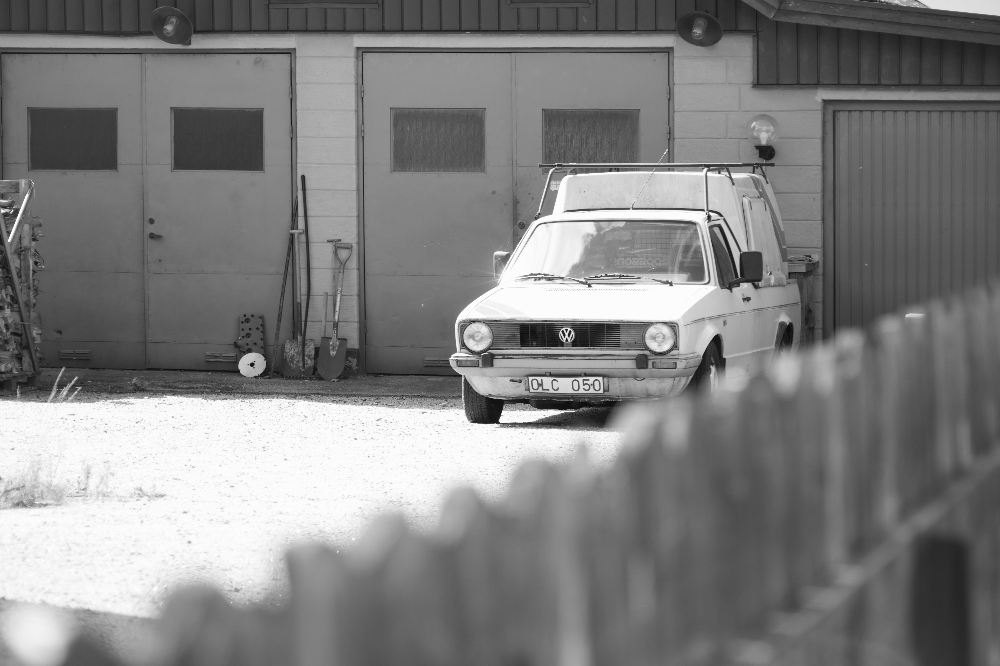
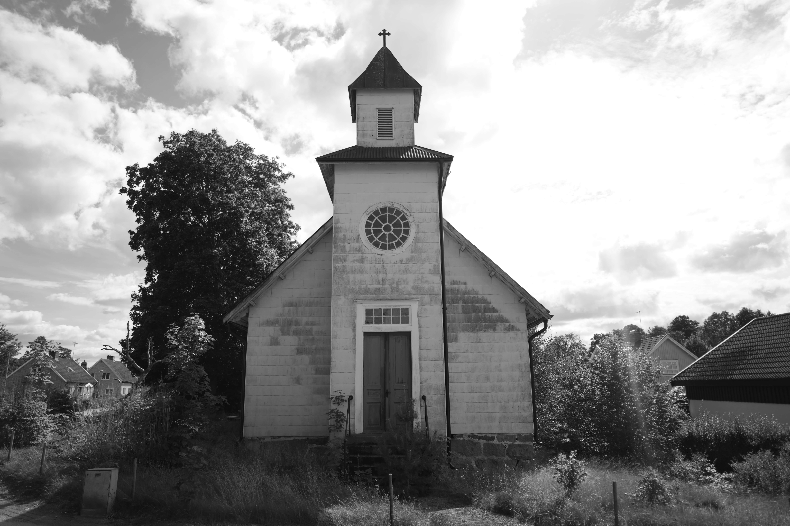
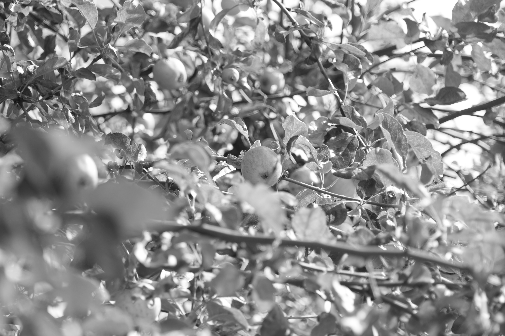
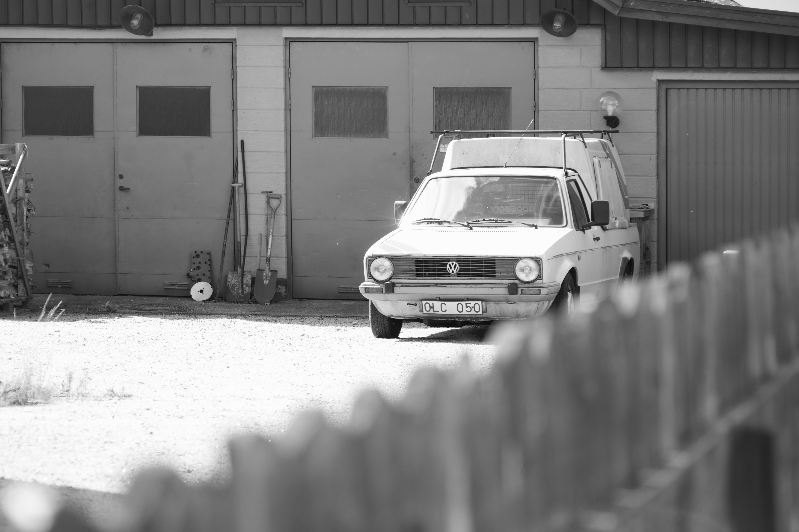
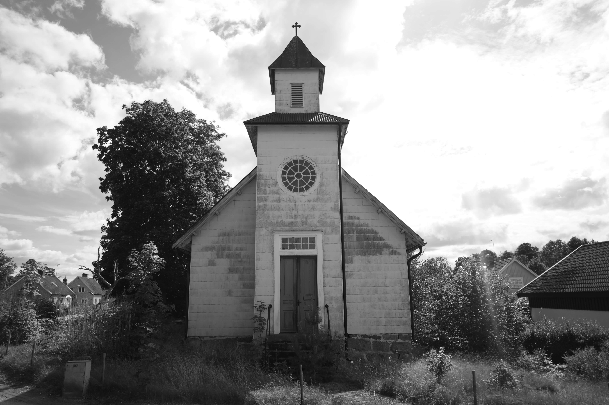
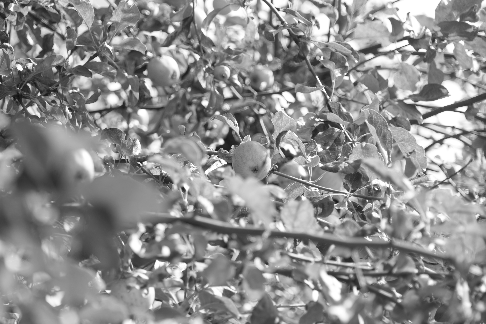

In the heart of Ryd, where stories unfold,
An old motel stands with secrets untold.
Its weathered walls echo love's sweet embrace,
Whispering tales of passion and grace.
Within its rooms, love's symphony played,
In whispered words and promises made.
Old tools rest there, witnesses in time,
Crafting memories, stories so sublime.
Beside the motel, an old car remains,
A relic of love's enduring refrains.
Two souls intertwined, on roads they'd explore,
A journey of love, forever to endure.
An aged church stands, weathered by years,
Its beauty may fade, but memory clears.
Where vows were exchanged, love's flame ignited,
Its spirit lives on, though time's course has slighted.
Beneath the skies of Ryd, where dreams still soar,
Old apple trees stand, memories to adore.
Their branches outstretch, like love's embrace,
Witnesses to a love that time cannot erase.

 




